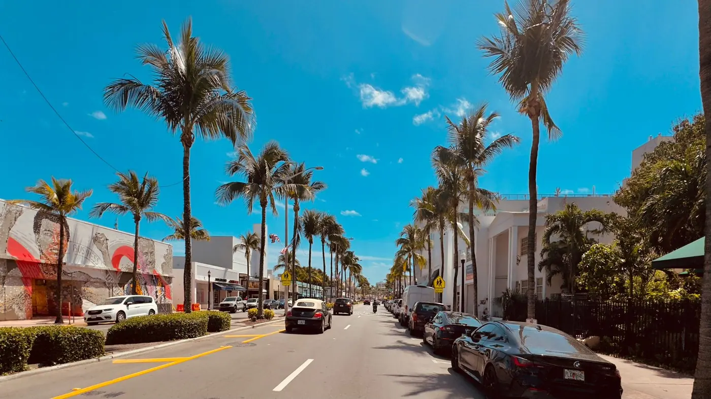

How we score towns
Every town gets the same scorecard, built from things we can count and check.
| Category | What we look at |
|---|---|
| Nightlife | Live music venues, bars and spots open late. A 3 means good bars that are busy on weekends or in season. A 5 means big city nightlife any night of the week |
| Meet people | Weekly clubs, rec leagues, meetups, volunteer groups and community events |
| Peace and quiet | Traffic, visitor crowds and noise, scored so 5 is quietest |
| Walkability | How many daily needs are within a short walk of the center of town |
| On the water | Marinas, boat ramps, fishing piers and waterfront access |
| Beaches | Public beach access, sand and water quality, and national beach rankings. The Best Beaches vibe uses its own satellite based beach rating, explained below |
| Dining and arts | Restaurants, galleries, theaters and festivals |
| Outdoors and wellness | Parks, trails, springs, bike paths and farmers markets |
| Affordability | Home prices compared with the Florida median, plus typical insurance costs. 5 is most affordable |
| Airport access | Drive time to the nearest major airport |
| Public school grades | Not on the scorecard. Used when you raise it on the sliders. From the Florida Department of Education grade for the county school district that serves the town (2025-26). It does not rate any single school; check the official school grades for an address. |
| Community and social scene | Not scored. A write up of what a night out looks like and where people meet: venues, clubs, markets and events, plus a quick look at pickleball, tennis, golf, live music, trivia and pro sports nearby. Places and things to do, never who lives there. |
| Schools | Not scored. We link to official Florida school grades so you can see the facts yourself. On the Slider Map, Public schools ranks towns by the official grades (percent of points) of the nearest public elementary, middle and high schools. |
How we pick each vibe
Every vibe on the Vibe Map comes from a written rule built on the scores above, so the same rule applies to every town.
- Remote Work: towns within about an hour of an airport, not the big cities, ranked equally on walkability, community, beaches, charm and the share of residents who run their own business (Census).
- Sophisticated Laid Back: towns where the typical home is $600K or more, ranked on dining (counts double), beaches, peace and quiet, how high end they are and how little nightlife they have.
- Healthy Living: towns that rank high for both nightlife and bars per resident are left out, and so are towns without a real outdoors (top 80 of 167). The rest are ranked on walkability (25%), good food close by (20%: grocers and farmers markets against fast food), parks and paths (15%), a hospital and doctors nearby (15%), community (15%) and peace and quiet (10%).
- Active Lifestyle: towns must rank in the top 60 of 167 for the outdoors (surf, paddling, trails, bike paths and preserves). They are ranked on the outdoors (45%) plus, per resident, public pickleball courts, public tennis courts, public golf, bike paths and organized races (10% each) and gyms and studios (5%). Sources: Pickleheads, GolfLink, RunSignup and OpenStreetMap.
- Best Beaches: we rate the beach, not the town. Fifty beaches are measured on how white the sand is (Sentinel-2 satellite photos, the brightest sand pixels so narrow beaches aren't penalized), 41%; how clear the water is (NASA MODIS satellite water clarity), 18%; comfortable weather, days a year with a normal high between 60 and 85 averaged across nearby NOAA stations, 18%; crowding, hotels and towers near the sand plus peace and quiet, 18%; and snorkeling you can reach from shore (the state reef map plus named snorkel reefs and jetties), 6%. Red tide history from FWC moves a beach down up to 6 spots (up to 10 if it were year round), and famously soft quartz sand moves it up one or two. The top 30 carry the vibe.
- Island Vibes: towns on a real island where you kick off your shoes, ranked on laid back and local (few chains, no condo towers, 30%), boating (20%), how tropical it is (20%), evenings out (15%), beaches (10%) and price (5%). The most polished islands, where the typical home tops $2 million, are left out. The towns we count as island towns: Anna Maria Island, Big Pine Key, Boca Grande, Bradenton Beach, Captiva Island, Cedar Key, Chokoloskee, Clearwater Beach, Fernandina Beach, Fort Myers Beach, Hutchinson Island, Islamorada, Key Biscayne, Key Largo, Key West, Longboat Key, Marathon, Marco Island, Matlacha, Navarre Beach, Palm Beach, Pensacola Beach, Perdido Key, Port St. Joe, Sanibel Island, Siesta Key, St. George Island, St. Pete Beach, Tierra Verde, Treasure Island. Port St. Joe counts for Cape San Blas and Fernandina Beach for Amelia Island.
- Dock Life: towns where a boat out back is normal. We count every single family home and townhome in the 2026 Florida property rolls that sits within 10 meters of navigable salt or brackish water: bays, rivers, the Intracoastal and canals that connect to them without a lock or spillway. Open beachfront on the Gulf or Atlantic doesn't count, except in the Keys, where oceanside homes often have docks. Towns rank on the share of homes on the water (40%), how many waterfront homes there are (30%) and boating: marinas and boat ramps plus our life on the water score (30%). The top 28 carry the style. Marco Island keeps Dock Life over Healthy Living under the four vibe limit.
- Best Schools: towns whose county school district earned an A from the Florida Department of Education for 2025 to 2026, with at least 95% of its graded schools at A or B. Every town in a district shares its grade, so check the schools for any address you're considering. 24 towns in 7 districts carry the style.
- Affordable: the yearly cost to own a typical house: the mortgage on the county recorded median house sale (20% down, 30 years at about 6.25%), property tax at Florida's statewide average rate after the homestead exemption, and the county average homeowners premium including wind (Florida Office of Insurance Regulation, July 2026), plus expected flood insurance: the share of the town's recorded house sales in FEMA high risk flood zones times a typical Florida single family flood policy ($1,402 a year, FEMA data). Towns need at least 20 recorded house sales.
- Old Florida: towns with a real working waterfront (fish houses, commercial boats, old docks), low buildings with no wall of condos and local shops instead of chains, leaving out nightlife towns. Ranked on coastal charm, then peace and quiet.
- High Energy: nightlife counts double, plus a lively downtown and dining.
- Walkable: our walkability score, in order.
- Social Scene: nightlife and a lively downtown count double, plus walkability.
Every vibe is scored from places, never from data about the people who live there. Per resident counts use the population nearby only to measure how crowded the courts, parks and shops are. No town carries more than four vibes. When a town qualifies for more, it keeps the vibes where it ranks highest, so each vibe has towns that really stand for it. Key West is the one exception, with five.
What we never score
We rate places, not people. We never score or describe a town by who lives there, including age, family status, marital status, religion, race, national origin, sex or disability, and we never steer anyone toward or away from a town.
Your priorities, your ranking
On the Priorities page you choose what matters to you. Your matches come from your own choices, and every town stays open to you.
How the match works
Your must haves count the most, about three times an important and nine times a nice to have. A town that is weak on one of your must haves drops down your list, even if it does everything else well, and a weak score on something you called important costs a little too.
We show a fit percentage when your best match is a real fit. When no town has everything you asked for, we skip the numbers, show you the closest towns and tell you plainly what the closest one gives up.
The Slider Map
Every town is ranked from 1 to 167 in each category. The ranks start from the same 1 to 5 scores, then use finer data to separate towns that tie: national beach rankings for beaches, real home prices for affordability, drive times for the airport, and 2020 Census population where nothing finer exists (bigger towns tend to have more going on, smaller ones are quieter).
Public schools averages the official state grades of the nearest public elementary, middle and high schools. On the water counts marinas, boat ramps and docks nearby, and treats every town with residential canals (a dock out back) as top tier. Destin and Captiva are placed by hand, since the map undercounts their harbors. Social scene counts the restaurants, cafes, bars, gyms, studios, courts and community centers within a mile of downtown (from OpenStreetMap), how walkable the center is, and whether the town is the size where you keep running into people, roughly 8,000 to 80,000. Active outdoors scores paddling (kayak and paddleboard launches, blueways, springs), a real surf break, trails and bike paths, nature preserves close by, and an outdoor culture of outfitters and clubs. Coastal charm is our local call, scored the same way for every town: a real historic downtown, local spots instead of chains, no wall of condo towers, an old waterfront, older buildings still standing, and how pretty and cared for the streets are. National Register listings and map data break ties. Sliders count only once you push them up, so the towns you see are ranked on what you actually moved. Push one slider all the way and you get that category's top towns in order. Push a few and they blend, with the higher sliders counting more. Quiet or lively starts in the middle: slide left for the quietest towns, right for the most going on. At 90 or above a slider becomes a must have, and towns ranked outside the top 60 for it drop down your list.
Your budget
| Your range | Full credit for towns scoring |
|---|---|
| Under $350K | 4 or 5 on Affordability |
| $350K to $500K | 3 and up |
| $500K to $750K | 2 and up |
We ask for a price range and match it to typical home prices in each town, using the Affordability score, as in the table above. A town inside your range gets full credit, and it loses ground for every step it is pricier than that. It is a guide to what is typical in a town, not a search of homes for sale.
If boating and fishing is your answer, we lean a little further toward lower priced towns, because docks, slips and waterfront insurance cost more in the priciest ones. If you add Affordability as a priority yourself, it carries one and a half times the weight of any other priority at the same level.
City or quiet
We ask how busy you want home to be, from right in the middle of it to as quiet as it gets. We match that against each town's Peace and quiet score. A town that sits where you asked gets full credit, and it loses ground for every step it is busier or quieter than that. You can change it any time in the priorities bar.
One coast, one area or all of it
Pick a coast and we only rank towns on that coast. You can also narrow it to one of 15 areas, like the Space Coast or the Palm Beaches, if you already know roughly where you want to be.